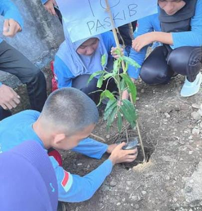

Sistem Penerimaan Murid Baru (SPMB)
SPMB tahun ini dibuka mulai tanggal 21 April 09 Mei 2025. Calon siswa dapat mendaftar secara daring melalui website resmi sekolah. Tes seleksi akan dilakukan secara online.
Penanaman Pohon dalam Rangka Hari Bumi
Dalam rangka memperingati Hari Bumi Sedunia pada tanggal 26 April, OSIS dan seluruh ekstrakurikuler yang ada di sekolah melaksanakan kegiatan penanaman pohon di area taman belakang sekolah. Kegiatan ini bertujuan meningkatkan kesadaran akan pentingnya menjaga lingkungan.
